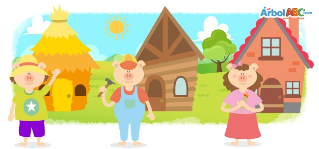
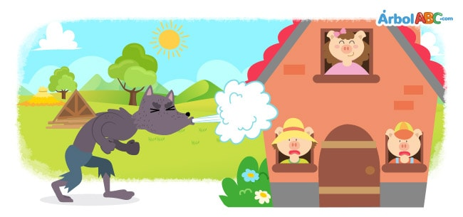

The Three Little Pigs

In a small village not far away, lived Mother Pig with her three little piglets.
Everyone was very happy until one day Mother Pig told them, “Children, you have grown, it is time to live on
your own.”
Before they left, she said to them, “In life nothing comes easy. Therefore, you must
learn to work to achieve your dreams.”
Mother Pig kissed her piglets and they left to go off and live on their own.
The youngest pig was lazy and did not pay attention to his mother´s words. He decided to
build a straw house, so he could finish early and lie down to rest.
The middle brother was as lazy as the youngest, so he built a little wooden house. The
house was crooked because he did not want to read the instructions to build it properly.
The older sister was a hard worker. This is because she used to be lazy and learned from
her mistakes. She decided to follow Mother Pig words and build a brick house. Building a brick house would
take a long time, but this did not matter to her.
One night, the big bad wolf was walking through the woods when he came upon the youngest
pig’s straw house. He looked through the windows and saw the little pig sleeping peacefully. The wolf was
hungry and thought that the little pig would make a very delicious sandwich, so he knocked on the door and
shouted, “Little pig, little pig, let me in!”
The little piglet woke up scared and answered, “No! No! No! Not by the hairs on my
chinny chin chin!”
The big bad wolf was furious and said, “Then I’ll huff, and I’ll puff, and I’ll blow
your house down!”
The wolf huffed and puffed and blew with all his strength until the straw house fell to
the ground. Fortunately, the little pig escaped, running to the wooden house of his brother while the big,
bad wolf was still blowing.
The mean wolf, feeling cheated, went to the house of the middle pig and when he knocked
on his door he shouted, “Little pig, little pig let me in!”
The little pig answered, “No! No! No! Not by the hairs on my chinny chin chin!”
The hungry wolf became enraged and bellowed, “Then I’ll huff, and I I’ll puff, and I’ll
blow your house down!”
The wolf huffed and puffed and blew with all his strength until the little wooden house
fell to the ground. Fortunately, the two little pigs escaped, running to the house of their sister while the
big, bad wolf was still blowing. Out of breath from running so fast, the two brothers told their sister
about the wolf and how he blew down their houses.
“Dear brothers, it’s cold and you’ve had a very bad time, so let's enjoy the night by
the fireplace,” said Sister Pig. Just at that moment the three little pigs heard a knock on the door.
“Little pig, little pig let me in!” shouted the big bad wolf.
The pigs answered, “No, no, no! We will never let you in.”
The hungry wolf was furious and once again shouted “Them I’ll huff, and I’ll puff, and
I’ll blow your house down.”
Once again, the wolf huffed and puffed and blew with all his might, but the little brick
house did not fall. Enraged, as he was very hungry, the wolf decided to climb onto the roof to go down
through the chimney to get to the little pigs. However, when he slid down the chimney, the wolf burned his
tail on the fire below.
“Ouch!” cried the wolf, and he ran out into the woods never to be seen again.
A few days later, Mother Pig went to visit her little pigs and discovered that all three
had built brick houses. All the pigs had learned a very important lesson:
“In life, nothing comes easy. Therefore, we must work hard to achieve our dreams.”
Moral: Do not count you chickens before they are hatched.

Los tres cerditos
En un pequeño pueblo no muy lejos, vivía Mother Pig con sus tres cerditos.
Todos estaban muy contentos hasta que un día Madre Cerdo les dijo: "Hijos, ustedes han crecido, es hora de vivir.
la suya ".
Antes de irse, ella les dijo: “En la vida, nada es fácil. Por lo tanto, debes
aprende a trabajar para alcanzar tus sueños ".
Madre Cerdo besó a sus lechones y se fueron a vivir solos.
El cerdo más joven era vago y no prestaba atención a las palabras de su madre. El decidió
construir una casa de paja, para que pueda terminar temprano y acostarse para descansar.
El hermano del medio era tan vago como el más joven, por lo que construyó una pequeña casa de madera. los
la casa estaba torcida porque no quería leer las instrucciones para construirla correctamente.
La hermana mayor era muy trabajadora. Esto es porque ella solía ser perezosa y aprendió de
sus errores Ella decidió seguir las palabras de Madre Cerdo y construir una casa de ladrillos. Construir una casa de ladrillo
lleva mucho tiempo, pero esto no le importó.
Una noche, el lobo feroz estaba caminando por el bosque cuando se encontró con el más joven
casa de paja de cerdo. Miró por las ventanas y vio al cerdito durmiendo tranquilamente. El lobo era
hambriento y pensó que el cerdito haría un sándwich muy delicioso, así que llamó a la puerta y
gritó: "¡Cerdito, cerdito, déjame entrar!"
El cerdito se despertó asustado y respondió: "¡No! ¡No! ¡No! No por los pelos de mi
chinny chin chin! "
El lobo feroz se puso furioso y dijo: "Entonces resoplaré, resoplaré y soplaré".
tu casa abajo! "
El lobo resopló, resopló y sopló con todas sus fuerzas hasta que la casa de paja cayó al suelo.
el terreno. Afortunadamente, el cerdito escapó, corriendo hacia la casa de madera de su hermano mientras el grande,
lobo malo todavía estaba soplando.
El lobo malo, sintiéndose engañado, fue a la casa del cerdo medio y cuando llamó
en su puerta gritó: "¡Cerdito, cerdito, déjame entrar!"
El cerdito respondió: "¡No! ¡No! ¡No! ¡No por los pelos de mi chinny chin chin! ”
El lobo hambriento se enfureció y gritó: "Entonces resoplaré, y resoplaré, y
¡derriba tu casa! "
El lobo resopló, resopló y sopló con todas sus fuerzas hasta la casita de madera.
Cayó al suelo. Afortunadamente, los dos cerditos escaparon, corriendo a la casa de su hermana mientras el
El lobo grande y malo todavía estaba soplando. Sin aliento por correr tan rápido, los dos hermanos le dijeron a su hermana
sobre el lobo y cómo derribó sus casas.
"Queridos hermanos, hace frío y la han pasado muy mal, así que disfrutemos la noche
la chimenea ”, dijo la hermana Pig. Justo en ese momento los tres cerditos escucharon un golpe en la puerta.
"¡Cerdito, cerdito, déjame entrar!" gritó el lobo feroz.
Los cerdos respondieron: "¡No, no, no! Nunca te dejaremos entrar ".
El lobo hambriento estaba furioso y una vez más gritó "Les resoplaré, y resoplaré, y
Volaré tu casa ".
Una vez más, el lobo resopló, resopló y sopló con todas sus fuerzas, pero el pequeño ladrillo
La casa no se cayó. Enfurecido, ya que tenía mucha hambre, el lobo decidió subir al techo para bajar
a través de la chimenea para llegar a los cerditos. Sin embargo, cuando se deslizó por la chimenea, el lobo quemó su
cola en el fuego de abajo.
"¡Ay!" gritó el lobo, y salió corriendo hacia el bosque para no ser visto nunca más.
Unos días después, Mother Pig fue a visitar a sus cerditos y descubrió que los tres
había construido casas de ladrillo. Todos los cerdos habían aprendido una lección muy importante:
“En la vida, nada es fácil. Por lo tanto, debemos trabajar duro para lograr nuestros sueños ".
Moraleja: no cuente los pollos antes de que nazcan.